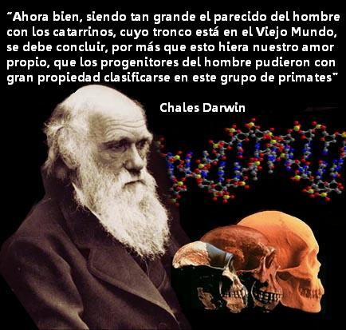
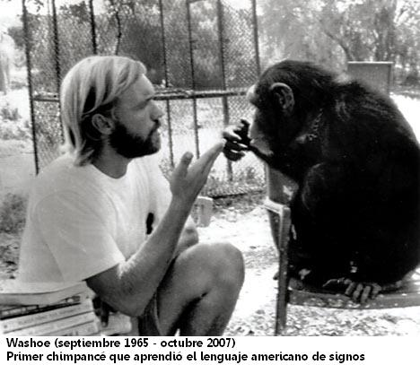

Tengo la sospecha que si el hombre no estuviera implicado en la evolución biológica, no habría habido ningún problema en aceptarla.
Por ejemplo, es evidente para cualquiera que algunos animales se parecen mucho entre sí. ¿Quién negaría que un perro y un lobo se parecen en aspectos muy importantes? ¿O un tigre y un leopardo? ¿O una langosta y un cangrejo?

Hace veintitrés siglos, el filósofo griego Aristóteles agrupó a diferentes tipos de especies y confeccionó una «escala de la vida» en la que los clasificaba empezando por la planta más simple y subiendo escalones hasta llegar a los animales más complejos, con el hombre en la posición más elevada (como era de esperar).
Una vez hecho esto, en la actualidad podemos decir, con la ventaja que nos da la visión retrospectiva, que era inevitable que la gente se diera cuenta que cada tipo de especie se había transformado a partir de otra; que las especies más complejas se habían desarrollado a partir de las más simples; que, en definitiva, no sólo existía una escala de la vida, sino también un sistema mediante el cual las formas de vida iban subiendo por esa escala.¡Pues no señor! Ni Aristóteles ni aquellos que vinieron después de él durante más de dos mil años consideraron jamás la escala de la vida como algo no estático, sino dinámico y evolutivo.
Se creía que las diferentes especies eran permanentes. Podían estar divididas en familias y jerarquías, pero las formas de vida eran las mismas desde el primer momento. Se aseguraba que las similitudes existían desde el principio, y que ninguna especie evolucionaba hasta parecerse más —o menos— a otra con el paso del tiempo.
Tengo la impresión que esta insistencia en la inmutabilidad de las especies se debía, al menos en parte, a la incómoda sensación que, si se admitía la posibilidad del cambio, el hombre ya no podría considerarse como un caso único y se convertiría en «un animal más».
Con el dominio de la cristiandad sobre el mundo occidental, las opiniones sobre la inmutabilidad de las especies se hicieron aún más rígidas. El primer ensayo del Génesis describe la creación de las distintas especies vivas, diferenciadas en sus formas definitivas desde el principio; lo que es más, la creación del hombre se diferencia de la del resto de los seres. «Y dijo Dios: “Hagamos al hombre a nuestra imagen y semejanza”…» (Génesis, 1, 26).
Ningún otro ser vivo fue hecho a imagen de Dios, lo que establecía una barrera infranqueable entre el hombre y el resto de los seres vivos. Cualquier opinión que llevara a suponer que las barreras entre las especies eran permeables, podía debilitar la fundamental barrera protectora del hombre.
Desde luego, habría estado muy bien que todas las otras formas de vida sobre la Tierra fueran tan enormemente distintas del hombre como para reflejar en el plano físico esta infranqueable barrera. Pero, por desgracia, aun en la antigüedad el mundo mediterráneo sabía de la existencia de unos animalitos llamados «monos».
Algunas de las especies de monos conocidas por los antiguos tenían pequeños rostros arrugados como de hombrecillos; sus manos eran a todas luces muy parecidas a las humanas y manipulaban las cosas con los dedos igual que los seres humanos, mostrando claramente una viva curiosidad. Pero tenían cola, y este hecho permitía a los hombres salvar el tipo. Es tan evidente que el ser humano no tiene cola y que la mayoría de los animales que conocemos sí, que esta diferencia parecía en sí misma el símbolo de la barrera insuperable entre el hombre y el mono.
En realidad, hay animales sin cola o con una cola muy corta, como las ranas, los conejillos de Indias y los osos; pero estos animales no constituyen una amenaza para la posición del hombre. Y sin embargo…
En la Biblia hay una referencia a un mono, para el que los traductores se sirvieron de una palabra determinada. La mención aparece en una relación sobre las empresas comerciales del rey Salomón: «…una vez cada tres años llegaba la flota de Tarsis, cargada de oro, plata, marfil, simios y pavos reales» (1Reyes, 10: 22).
Tarsis ha sido identificada a menudo como Tartesos, una ciudad de la costa española al oeste del estrecho de Gibraltar, que en época de Salomón era un floreciente centro de comercio, destruido por los cartagineses en el 480 a. C. Frente a las costas de Tartesos, en el noroeste de África, existía (y existe) una especie de mono del grupo de los macacos. Este macaco es el «simio» bíblico; posteriormente, cuando el noroeste de África formaba parte de la Berbería, los europeos llamaron a este mono «simio de Berbería».

El simio de Berbería no tiene cola, y por tanto se parece más al hombre que otros monos. En su escala de la vida, Aristóteles situó al simio de Berbería en el punto más elevado del grupo de los monos, inmediatamente por debajo del hombre. Galeno, el médico griego que vivió alrededor del 200 a. C., diseccionaba simios y demostró que su parecido con el hombre era también interno y no sólo externo.
A los antiguos les divertía y les molestaba el parecido del simio berebere con el hombre. Se dice que el poeta romano Ennio comentó: «El simio, la más vil de las bestias, ¡cómo se parece a nosotros!» ¿Era realmente el simio «la más vil de las bestias»? Objetivamente, desde luego que no. Lo que le hacía parecer vil era su parecido con el hombre y la consiguiente amenaza que suponía para el apreciado carácter único del hombre.
En la época medieval, cuando el carácter único y la supremacía del hombre se convirtieron en un dogma inatacable, la existencia del simio resultaba aún más irritante. Se le identificaba con el Diablo. Después de todo, el Diablo era un ángel caído y deformado, y bien podía el simio haber sido creado a su imagen, de la misma manera que el hombre había sido creado a la imagen de Dios.
Pero ninguna explicación lograba acabar con la inquietud que despertaba. El dramaturgo inglés William Congreve escribió en 1695: «Nunca podría mirar a un mono largo rato sin caer en humillantes reflexiones» . No es muy difícil imaginar que esas «humillantes reflexiones» estaban relacionadas con el hecho que el hombre podría ser considerado una especie de simio grande y algo más inteligente.
La Edad Moderna empeoró las cosas al dar la oportunidad al orgulloso europeo hecho a imagen de Dios de trabar conocimiento con otros animales, desconocidos hasta entonces, todavía más parecidos a él que el simio de Berbería.
En 1641 se publicaba la descripción de un animal que había sido traído de África y que se encontraba en Holanda, en un jardín zoológico perteneciente al príncipe de Orange. Por la descripción parece ser que se trataba de un chimpancé. También existían noticias sobre un gran animal parecido al hombre y que vivía en Borneo, el que ahora conocemos como orangután.
El chimpancé y el orangután eran también «simios» porque, al igual que el simio berebere, no tenían cola. En años posteriores, cuando se admitió que el chimpancé y el orangután se parecían más al hombre que a los monos, pasaron a ser denominados simios «antropoides» (parecidos al hombre).
En 1758 el naturalista suizo Carolus Linneo realizó el primer intento de clasificación cuidadosamente sistemática de todas las especies. Creía firmemente en la inmutabilidad de las especies, y no le preocupaba el hecho que algunas especies animales fueran tan parecidas al hombre: simplemente fueron creadas de esta manera.
Por tanto, no vaciló en situar en el mismo grupo a las diversas especies de simios y monos, incluyendo también al hombre, y en llamar a los componentes de ese grupo «primates», del latín «primero», ya que entre ellos estaba el hombre. Este término se sigue utilizando.
Linneo clasificó a los monos y simios en general en un subgrupo de los primates al que llamó Simia («simio»).
Para los seres humanos inventó el subgrupo Homo («hombre»), Linneo utilizaba un doble nombre para cada especie (lo que se conoce por «nomenclatura binomial»; en primer lugar, viene el apellido, como cuando se dice Smith, John, y Smith, William), así que los seres humanos disfrutaban de la denominación Homo sapiens (sabio, hombre). Pero además Linneo situó otro nombre en ese grupo. Tras leer la descripción del orangután de Borneo, lo llamó Homo troglodytes (habitante de cavernas, hombre).
«Orangután» viene de una palabra malaya que quiere decir «hombre de los bosques». La descripción de los malayos era más adecuada, ya que el orangután es un habitante de los bosques y no de las cavernas, pero en cualquier caso no puede ser considerado lo suficientemente próximo al hombre como para justificar su inclusión en el grupo de los Homo.
El naturalista francés Georges de Buffon fue el primero en describir a los gibones, a mediados del siglo XVIII. Se trata de un tercer tipo de simio antropoide. Los diferentes gibones son los antropoides más pequeños y menos parecidos al hombre. Por esa razón en ocasiones se dejan de lado, mientras el resto de los antropoides son conocidos como los «grandes simios».
A medida que se fueron clasificando las especies con más detalle, los naturalistas se sentían cada vez más tentados a romper las barreras entre ellas. Algunas especies se parecían tanto a otras que no existía ninguna seguridad que pudiera definirse una separación entre ellas. Además, cada vez había más indicios que muchos animales se encontraban en pleno cambio, por decirlo así.

Buffon observó que el caballo tenía dos «tablillas» a cada lado de los huesos de las patas, lo que parecía ser una señal que en alguna época tuvo tres líneas de huesos y tres cascos en cada pata.
Buffon sostenía que si era posible que los cascos y los huesos degeneraran, también podían hacerlo las especies en su totalidad. Quizá Dios había creado sólo determinadas especies que habían degenerado hasta cierto punto, dando lugar a otras especies adicionales. Si el caballo podía llegar a perder parte de sus cascos, ¿por qué no podría ser que algunos de ellos hubieran degenerado hasta transformarse en burros?
Como las especulaciones de Buffon se referían a lo que, después de todo, era la parte más importante de la historia natural centrada en el hombre, propuso la teoría que los simios eran hombres que habían degenerado.
Buffon fue el primero en hablar de la mutabilidad de las especies. Pero evitó el peligro mayor: el de sugerir que el hombre, hecho a imagen de Dios, había sido originalmente distinto, aunque si afirmó que el hombre podría transformarse en algo distinto. Incluso eso resultó demasiado, porque una vez que se traspasaban los límites en una dirección sería difícil hacerlos infranqueables en la otra. Buffon fue presionado para que se retractara, y así lo hizo.
Pero la idea de la mutabilidad de las especies no fue abandonada. Un médico británico, Erasmus Darwin, tenia la costumbre de escribir largos poemas de calidad mediocre en los que presentaba sus a menudo interesantes teorías científicas. En su último libro, Zoonomía , publicado en 1796, ampliaba las ideas de Buffon y proponía la teoría que las especies sufrían cambios a consecuencia de la influencia directa que el medio ambiente tenia sobre ellas.
El naturalista francés Jean Baptiste de Lamarck llevó aún más lejos esta teoría. Con la publicación en 1809 de La filosofía zoológica, se convirtió en el primer científico importante que adelantó una teoría de la evolución, describiendo con todo detalle cómo era posible, por ejemplo, que un antílope llegara a cambiar poco a poco, a lo largo de generaciones, hasta transformarse en una jirafa. (Darwin y Lamarck fueron víctimas del ostracismo de las instituciones de la época, tanto científicas como no científicas, a causa de sus opiniones.)
Lamarck se equivocaba en su concepción del mecanismo evolutivo, pero su libro dio a conocer al mundo científico el concepto de evolución, alentando a otros a descubrir un mecanismo que quizá fuera más viable.
El hombre que dio en el clavo fue el naturalista inglés Charles Robert Darwin (nieto de Erasmus Darwin), que se pasó casi veinte años recogiendo datos y dando forma a sus argumentaciones. Actuó así en primer lugar porque era un hombre meticuloso, y en segundo lugar porque sabía el destino que le esperaba a cualquiera que propusiera una teoría evolucionista, y quería desarmar al enemigo presentando unos argumentos tan sólidos como el hierro.
En su libro Sobre el origen de las especies por medio de la selección natural , publicado en 1859, evitó cuidadosamente toda mención al ser humano. Por supuesto, no le sirvió de nada. Era una persona amable y virtuosa, casi tan santo como cualquier clérigo del Reino, pero no habría sufrido ataques más virulentos de haber matado a su madre a mordiscos.
Sin embargo, las pruebas a favor de la evolución han seguido acumulándose. En 1847 el mayor simio antropoide existente, el gorila, fue, por fin, presentado ante los ojos de los europeos, y es el simio más impresionante de todos. Al menos, su tamaño contribuía a hacerle parecer más humano que ningún otro; casi sobrehumano.
Y después, en 1856, se descubrieron en el valle de Neander, en Alemania, los primeros restos fósiles de un organismo que era evidentemente más avanzado que ninguno de los antropoides vivos y claramente más primitivo que cualquier hombre viviente. Se trataba del « hombre de Neandertal ». No sólo el número de pruebas a favor de la evolución aumentaba continuamente, sino que se descubrieron las primeras evidencias que confirmaban que había habido una evolución del ser humano.
En 1863 el geólogo escocés Charles Lyell publicó La antigüedad del hombre , en la que esgrimía las antiguas herramientas de piedra como pruebas a favor de su teoría que el género humano tenía mucho más de los seis mil años de antigüedad que se le atribuían (y también al Universo) en la Biblia. También se convirtió en un firme defensor de la teoría darwiniana de la evolución.
Y, por fin, en 1871, Darwin extendió su teoría al hombre en su libro El origen del hombre.
Por supuesto, los antievolucionistas siguen acompañándonos hasta hoy en día, defendiendo su causa con ardor y firmeza. Recibo de ellos más cartas de las que en justicia me corresponden, así que conozco la naturaleza de sus argumentos.
Se concentran única y exclusivamente en un punto: el origen del hombre. No he recibido ni una sola carta en la que se defienda acaloradamente que el castor no está emparentado con la rata o que la ballena no desciende de un mamífero terrestre. A veces me da la impresión que no se dan cuenta que la evolución es aplicable a todas las especies. Únicamente insisten en que el hombre no, no, NO desciende de, ni está emparentado con, los simios o los monos.
Algunos evolucionistas intentan contestarles diciendo que Darwin no dijo nunca que el hombre descendiera de los monos; que ningún primate vivo es antepasado del hombre. Pero eso no es más que un matiz sin ninguna importancia. Según la teoría evolucionista, el hombre y los simios tienen algún antepasado común que no ha sobrevivido hasta hoy en día, pero que era una especie de simio primitivo. Si nos remontamos más en el tiempo, los diferentes antepasados del hombre tenían un aspecto inequívocamente simiesco; al menos para el lego en zoología.
Como evolucionista, prefiero enfrentarme a este hecho sin tapujos. Estoy perfectamente dispuesto a defender que el hombre desciende de los monos, que es la manera más simple de expresar lo que, en mi opinión, son los hechos.
Y también tenemos que mantenernos fieles a los monos desde otro punto de vista. Los evolucionistas pueden hablar de los «homínidos primitivos», del Homo erectus, el Australopitecos y de todo lo que quieran. Podemos utilizarlos como pruebas de la evolución del hombre y sobre la naturaleza del organismo del que desciende.
Tengo la sospecha que esto no convence a los antievolucionistas y que ni siquiera les preocupa demasiado. Parecen creer que el hecho que un montón de descreídos que se llaman a si mismos científicos encuentren un diente por aquí, un hueso de cadera por allá y un trozo de cráneo más allá y los recompongan como un rompecabezas, construyendo una especie de hombre-simio, no tiene ningún sentido.
Por las cartas que recibo y por los escritos que he leído, me da la impresión que el carácter emocional de los antievolucionistas se reduce a la cuestión del hombre y el mono, y a ninguna otra cosa más.
Me da la impresión que los antievolucionistas abordan el tema hombre-mono de dos maneras. Pueden defender firmemente la Biblia, declarando que está redactada por inspiración divina y que en ella se afirma que el hombre fue creado por Dios a su imagen a partir del polvo de la Tierra hace seis mil años, y que no hay más que hablar. Si adoptan esta postura, está claro que sus opiniones son innegociables, y no tiene sentido intentar negociar con ellos. Con una persona así podría hablar del tiempo, pero no de la evolución.
Un segundo camino es el que siguen los antievolucionistas que intentan encontrar alguna justificación racional para su postura; esto es, una justificación que no esté basada en la autoridad, sino que sea observable o comprobable experimentalmente y lógicamente argumentada. Por ejemplo, se puede afirmar que las diferencias entre el hombre y los demás animales son tan fundamentales que es impensable que puedan ser salvadas, y que es inconcebible que un animal se desarrolle hasta llegar a ser un hombre mediante la exclusiva actuación de las leyes de la naturaleza; que es necesaria una intervención sobrenatural.
Un ejemplo de estas diferencias insalvables seria la afirmación que el hombre tiene alma y que los animales no, y que un alma no puede desarrollarse mediante ningún proceso de evolución. Por desgracia, los métodos conocidos por la ciencia no son capaces de medir o detectar la presencia del alma. En realidad, ni siquiera es posible definir el alma a menos que se haga basándose en algún tipo de autoridad mística. Por tanto, este argumento no puede ser observado ni es comprobable experimentalmente.
En un plano menos exaltado, un antievolucionista puede argumentar que el hombre tiene el sentido del bien y del mal; que aprecia el valor de la justicia; que es, al fin y al cabo, un organismo moral y que los animales no lo son ni pueden serlo.
En mi opinión, esto es discutible. Hay animales que actúan como si amaran a sus crías y que llegan a dar su vida por ellas. Hay animales que cooperan entre sí y se protegen en caso de peligro. Esta conducta obedece a razones de supervivencia y es exactamente el tipo de actitud que los evolucionistas consideran probable que se desarrolle poco a poco hasta llegar al nivel que alcanza en el hombre.
Si se disponían a replicar que esta conducta aparentemente «humana» de los animales, es puramente mecánica y que es realizada sin intervención del entendimiento, volveremos a una discusión basada en las simples afirmaciones.
No sabemos qué es lo que ocurre en el interior del cerebro de los animales y, si vamos a eso, no tenemos ninguna seguridad en absoluto que nuestra propia conducta no sea tan mecánica como la de los animales, sólo que con un grado más de complicación y versatilidad.
Hubo un tiempo en que las cosas eran más fáciles que ahora, cuando la anatomía comparada estaba en mantillas y cuando era posible suponer que existía alguna enorme diferencia fisiológica que distinguía al hombre del resto de los animales. En el siglo XVII el filósofo francés Rene Descartes creía que el alma estaba, localizada en la glándula pineal, ya que aceptaba la idea, entonces bastante común, que esta glándula no se encontraba en ningún organismo excepto en el cuerpo humano.
Pero, ¡ay!, no es así. La glándula pineal está presente en todos los vertebrados y alcanza su mayor desarrollo en un reptil primitivo llamado tuatara. En realidad, ninguna parte de nuestro cuerpo es patrimonio del ser humano con exclusión del resto de las especies.
Vamos a ser más sutiles y a considerar la naturaleza bioquímica de los organismos. Aquí las diferencias son mucho menos marcadas que en la forma física del cuerpo y de sus partes. De hecho, los procesos bioquímicos de todos los organismos vivos presentan tantas similitudes, no sólo si comparamos al hombre con el mono, sino incluso con las bacterias, que de no ser por las ideas preconcebidas y el egocentrismo que define a nuestra especie, la evolución sería considerada un hecho evidente.
Tenemos que ser realmente muy sutiles y ponernos a estudiar los más finos entresijos de la estructura química de las omnipresentes y casi infinitamente versátiles moléculas de proteínas para llegar a encontrar algún rasgo que sea distintivo de cada especie. Después, gracias a las minúsculas diferencias de esa estructura química, se puede llegar a saber cuánto tiempo ha transcurrido aproximadamente desde que dos organismos se ramificaron a partir de un antepasado común.
Al estudiar la estructura de las proteínas no encontramos grandes brechas; las diferencias entre una especie y el resto no son tan enormes como para indicar que no habría habido tiempo para que esa divergencia se desarrollara a partir de un antepasado común a lo largo de toda la historia de la Tierra. Si existiera una diferencia tan marcada entre una especie y las demás, entonces esa especie en particular habría surgido de un glóbulo de vida primordial distinto al que dio origen a todo el resto. Aun así, esta especie habría evolucionado, descendería de otra especie más primitiva, pero no estaría emparentada con ninguna otra forma de vida terrestre. Pero repito que no se ha descubierto una diferencia tal y que no es probable que se descubra. Todas las formas de vida terrestre están interrelacionadas.
Desde luego, el hombre no está separado de otras formas de vida por alguna enorme diferencia bioquímica.
Bioquímicamente está dentro del grupo de los primates, y sus diferencias no son más acusadas que las de los otros miembros del grupo. De hecho, parece estar estrechamente emparentado con el chimpancé, cuya estructura proteínica es más parecida a la humana que la del gorila o el orangután.
Así que los antievolucionistas tienen que defendernos sobre todo del chimpancé. No cabe duda que si, como dijo Congreve, «miramos a un mono largo rato», en este caso a un chimpancé, tendremos que admitir que no existe ninguna diferencia vital entre él y nosotros, excepto el cerebro. ¡El cerebro humano es cuatro veces mayor que el del chimpancé!
Incluso esta considerable diferencia de tamaño es fácilmente explicable por la teoría del desarrollo evolutivo; sobre todo, teniendo en cuenta que los fósiles de homínidos tienen cerebros cuyo tamaño está a medio camino entre el del chimpancé y el del hombre moderno.
Pero es posible que un antievolucionista no considere dignos de atención los fósiles de homínidos y continúe afirmando que lo que cuenta no es el tamaño físico del cerebro, sino el tipo de inteligencia que opera a través de él.
Podría argumentar que la inteligencia humana sobrepasa de tal modo a la del chimpancé que cualquier posible relación entre las dos especies está totalmente descartada.
Un chimpancé no sabe hablar, por ejemplo. Los esfuerzos por enseñar a hablar a las crías de chimpancé no han tenido ningún éxito, por muy pacientes, hábiles y prolongados que hayan sido. Y sin el lenguaje, el chimpancé no es más que un animal; un animal inteligente, pero nada más que un animal. Con el lenguaje el hombre se eleva a las cumbres de Platón, Shakespeare y Einstein.
¿Pero no estaremos quizá confundiendo la comunicación con el lenguaje? No cabe duda que el lenguaje es la forma de comunicación más exquisita y eficaz que existe. (Nuestros dispositivos modernos, de los libros al aparato de televisión, transmiten el lenguaje de diferentes formas, pero sigue siendo lenguaje.) … ¿Pero acaso se trata de la única posibilidad?
El lenguaje humano está basado en la capacidad humana de controlar los rápidos y delicados movimientos de la garganta, la boca, la lengua y los labios, que al parecer, están bajo el control de una porción del cerebro llamada «circunvolución de Broca».
Si la circunvolución de Broca resulta dañada por un tumor o un golpe, el ser humano sufre afasia y es incapaz de hablar y de comprender el lenguaje… Pero un ser humano que sufra de esta enfermedad sigue siendo inteligente y puede hacerse entender por gestos, por ejemplo.
La parte del cerebro del chimpancé equivalente a la circunvolución de Broca no es suficientemente grande o suficientemente compleja como para posibilitar la aparición de un lenguaje en el sentido humano. Pero, ¿y los gestos? Los chimpancés en estado salvaje se sirven de gestos para comunicarse…
En junio de 1966 Beatrice y Allen Gardner, de la Universidad de Nevada, escogieron un chimpancé hembra de un año y medio de edad a la que llamaron Washoe, y decidieron intentar enseñarle el lenguaje de los sordomudos. Los resultados les dejaron asombrados, a ellos y a todo el mundo.
Washoe aprendió con facilidad docenas de signos y los utilizó adecuadamente para comunicar deseos y expresar conceptos abstractos. Inventó modificaciones que también utilizó adecuadamente. Intentó enseñarles el lenguaje a otros chimpancés, y estaba claro que disfrutaba con la comunicación.
Otros chimpancés han sido entrenados del mismo modo. Algunos han aprendido a ordenar fichas imantadas sobre una pared de diferentes maneras. En estos ejercicios demostraron que son capaces de tener en cuenta la gramática, y cuando sus instructores construían deliberadamente frases sin sentido no se dejaban engañar.
Tampoco se trata de reflejos condicionados. Todas las pruebas indican que los chimpancés saben lo que están haciendo, del mismo modo que los seres humanos saben lo que están haciendo cuando hablan.
Naturalmente, el lenguaje de los chimpancés es muy simple comparado con el del hombre. El hombre sigue siendo el más inteligente con gran diferencia. Pero la proeza de Washoe demuestra que nuestra capacidad de hablar sólo se diferencia de la del chimpancé de manera cuantitativa y no cualitativa.
«Mirar a un mono largo rato.» No hay argumentos válidos, excepto los basados en alguna autoridad mística, que puedan negar el parentesco del chimpancé con el hombre o el desarrollo evolutivo del Homo sapiens a partir del Homo no sapiens.
Originalmente publicado en http://blog-sin-dioses.blogspot.com/2010/08/mirar-un-mono-largo-rato.html
Volver a la sección Ciencias de los orígenes
Comentarios
Comments powered by Disqus